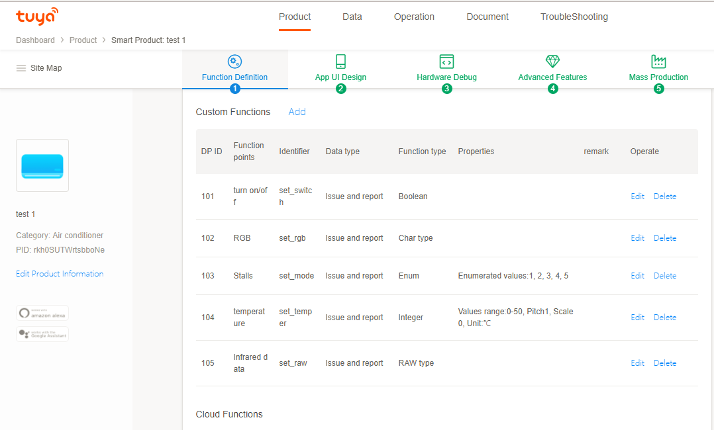

Acquisition of Device Information
[Description]
Tuya Smart provides a lot of interfaces for developers to realize the acquisition of device information and management capabilities (removal, and so on). Receivers shall be informed of the device-related return data by means of asynchronous messages.
[Notes]
- For the device control, the data must be initialized first; namely, TuyaHomeSdk.newHomeInstance(homeId).getHomeDetail(ITuyaHomeResultCallback callback) must be invoked first.
- If you need to use latitude and longitude to device control, you need to call TuyaSdk.setLatAndLong before the distribution network, where lon and lat are used to indicate latitude and longitude information.
Device Operation Control
The ITuyaDevice class provides the device status notification capability. By registering callback functions, developers can easily obtain notifications on device data reception, device removal, online/offline status of device, and mobile network changes. In addition, it also provides an interface for controlling command issuing and device firmware upgrade.
// Initialize the device control class based on the device id.
ITuyaDevice mDevice = TuyaHomeSdk.newDeviceInstance(deviceBean.getDevId());
Function Points of Device
The dps attribute of the DeviceBean class defines the state of the device, and is called the data point (DP) or the function point. Each key in the dps dictionary refers to a dpId of a function point, and the dpValue is the value of the function point. Refer to the functions of product on the Tuya developer platform for definition of function points of products. For details of function points, please refer to the Functional Point Related Concepts
[Command Format]
The control commands shall be sent in the format given below. {"(dpId)":"(dpValue)"}
[Example of Function Point]
A product interface on the development platform is as follows:
According to the definition of function points of the product in the back end, the example codes is as follows.
// Example for boolean type function point with dpId set to 101. Function: turn on switch.
dps = {"101": true};
// Example of string type function point with dpId set to 102. Function: set RGB to ff5500.
dps = {"102": "ff5500"};
// Example of enumeration type function point with dpId set to 103. Function: set gear to position 2.
dps = {"103": "2"};
// Example of value type function point with dpId set to 104. Function: set temperature to 20 centigrade degree.
dps = {"104": 20};
// Example of transparent (byte array) function point with dpId set to 105. Function: transparently transfer infrared data (i.e., 1122).
dps = {"105": "1122"};
// Send multiple dp data in one time.
dps = {"101": true, "102": "ff5500"};
mDevice.publishDps(dps, new IControlCallback() {
@Override
public void onError(String code, String error) {
//Error code 11001
//In the following cases:
//1. Type error send to, for example, string type format, being sent to boolean type data
//2. Read-only type DP data can not be sent. Reference to SchemaBean getMode "ro" is read-only type.
//3, raw format send data format is not a hexadecimal string.
}
@Override
public void onSuccess() {
}
});
[Notes]
- Special attention shall be paid to the type of data in sending the control commands. For example, the data type of function points shall be value, and {"104": 25} shall be sent as the control command, instead of {"104": "25"}.
- For the transparent transmission, the byte array shall be the string format, and the string must have even bits. The correct format shall be: {"105": "0110"}, instead of {"105": "110"}.
Device control
Device control supports three kinds of channel control, LAN control, cloud control, and automatic mode (if LAN is online, first go LAN control, LAN is not online, go cloud control)
LAN control:
mDevice.publishDps(commandStr, TYDevicePublishModeEnum.TYDevicePublishModeLocal, callback);
Cloud control
mDevice.publishDps(commandStr, TYDevicePublishModeEnum.TYDevicePublishModeInternet, callback);
Auto mode
mDevice.publishDps(commandStr, TYDevicePublishModeEnum.TYDevicePublishModeAuto, callback);
Initializing Data Listener
[Description]
The TuyaHomeDevice provides listeners for device-related information (dp data, device name, online status of device, and device removal), and the information will be synchronized here in real time.
[Callback]
mDevice.registerDevListener(new IDevListener() {
@Override
public void onDpUpdate(String devId, String dpStr) {
// dp data update: devId and corresponding dp data.
}
@Override
public void onRemoved(String devId) {
// The device is removed.
}
@Override
public void onStatusChanged(String devId, boolean online) {
// Status of device: online.
}
@Override
public void onNetworkStatusChanged(String devId, boolean status) {
// Network status listener
}
@Override
public void onDevInfoUpdate(String devId) {
// Device information change (currently, only the device name change requires the interface invocation)
}
});
Data Issuing
[Description]
Send control commands to the device through the LAN or the cloud.
[Method Invocation]
// Send control commands to the hardware.
mDevice.send(String command,IControlCallback callback);
[Example Codes]
Take the light product as an example.
(1) Defining the dp point of light switch
public static final String STHEME_LAMP_DPID_101 = "101"; //light switch
(2) Data structure of light switch
public class LampBean {
private boolean open;
public boolean isOpen() {
return open;
}
public void setOpen(boolean open) {
this.open = open;
}
}
(3) Device initialization
/**
* Device object. All dp changes for this device will be returned via callback.
* Before the device initialization, please make sure that the connection server has been initialized; otherwise, the information returned by the server cannnot be obtained.
*/
mDevice = new TuyaHomeSdk.newDeviceInstance(mDevId);
mDevice.registerDevListener(new IDevListener() {
@Override
public void onDpUpdate(String devId, String dpStr) {
// dp data update: devId and corresponding dp data.
}
@Override
public void onRemoved(String devId) {
// The device is removed.
}
@Override
public void onStatusChanged(String devId, boolean online) {
// Status of device: online.
// The statusChange refers to whether the communication between the hardware device and the cloud is normal.
}
@Override
public void onNetworkStatusChanged(String devId, boolean status) {
// Network status listener
// The onNetworkStatusChanged refers to whether the communication between the mobile phone and the cloud is normal.
}
@Override
public void onDevInfoUpdate(String devId) {
// Device information change (currently, only the device name change requires the interface invocation)
}
});
(4) Code segment for switching on the light
public void openLamp() {
LampBean bean = new LampBean();
bean.setOpen(true);
HashMap<String, Object> hashMap = new HashMap<>();
hashMap.put(STHEME_LAMP_DPID_101, bean.isOpen());
mDevice.publishDps(JSONObject.toJSONString(hashMap), new IControlCallback() {
@Override
public void onError(String code, String error) {
Toast.makeText(mContext, "turning on the light failed", Toast.LENGTH_SHORT).show();
}
@Override
public void onSuccess() {
Toast.makeText(mContext, "turning on the light success", Toast.LENGTH_SHORT).show();
}
});
}
(5) Cancel device listener event
mDevice.unRegisterDevListener();
(6) Device resource destruction
mDevice.onDestroy();
[Notes]
- The successful issuing of a command does not mean that the device is successfully operated, but only means that the command has been successfully sent. If the operation succeeds, the dp data information will be reported, and returned through the IDevListener onDpUpdate interface.
- The command string is converted to JsonString in the format of Map
. - The command can send multiple dp data at a time.
Querying Device Information
[Description]
Query single dp data; query the latest data of the dp from the device; those data will be called back via the IDevicePanelCallback onDpUpdate interface.
[Method Invocation]
mDevice.getDp(String dpId, IResultCallback callback);
[Example Codes]
1. It is achieved by invoking the mTuyaDevice.getDp method.
2. The data will be reported via the dp data upgrade listener.
IDevListener.onDpUpdate(String devId,String dpStr)
[Notes]
- This interface is mainly for the dp points where the data will not be reported automatically. The dp data values for regular query can be obtained through getDps() in DeviceBean.
Device Renaming
[Description]
Device renaming can be conducted in multiple devices synchronously.
[Method Invocation]
// Rename
mDevice.renameDevice(String name,IResultCallback callback);
[Example Codes]
mDevice.renameDevice("device name", new IResultCallback() {
@Override
public void onError(String code, String error) {
// Renaming failed
}
@Override
public void onSuccess() {
// Renaming succeeded
}
});
After renaming succeeded, IDevListener.onDevInfoUpdate() will be notified.
Invoke the following method to get the latest data, and then refresh the device information.
TuyaHomeDataManager.getInstance().getDeviceBean(String devId);
Remove Device
[Description]
It is used to remove a device from the list of user devices.
[Method Invocation]
/**
* Remove device
*
* @param callback
*/
void removeDevice(IResultCallback callback);
[Example Codes]
mDevice.removeDevice(new IResultCallback() {
@Override
public void onError(String errorCode, String errorMsg) {
}
@Override
public void onSuccess() {
}
});
Obtain Wifi signal strength of device
【Description】
Obtain Wifi signal strength of device
【Method Invocation】
void requestWifiSignal(WifiSignalListener listener);
【Example Codes】
mDevice.requestWifiSignal(new WifiSignalListener() {
@Override
public void onSignalValueFind(String signal) {
}
@Override
public void onError(String errorCode, String errorMsg) {
}
});;
DeviceBean
| Field | Type | Description |
|---|---|---|
| iconUrl | String | device icon |
| IsOnline | Boolean | Whether the device is online (LAN or Cloud Online) |
| name | String | device's name |
| schema | String | Device Control Data Point Type Information |
| productId | String | Product ID, the same product ID, Schema information consistent |
| supportGroup | Boolean | whether the device support groups? If not, you can go to the open platform to turn on this feature |
| Time | Long | Device Activation Time |
| pv | String | Gateway Protocol Version |
| bv | String | Gateway Universal Firmware Version |
| schemaMap | Map | Schema Cached Data |
| dps | Map | Device Data |
| isShare | Boolean | a shared device |
| virtual | Boolean | is it a virtual device |
| lon, lat | String | Longitude and Latitude Information |
| IsLocalOnline | Boolean | Device LAN Online Status |
| nodeId | String | Device for gateway and subdevice type, which is an attribute of the subdevice and identifies its short address ID which one gateway have a unique nodeId for each subdevice |
| timezoneId | String | Device time zone |
| category | String | Device Type |
| MeshId | String | Device for gateway and subdevice type, which is an attribute of subdevice and identifies its gateway ID |
| devId | String | Device unique identifier id |
| isZigBeeWifi | boolean | Is it a ZigBee gateway device? |
| hasZigBee | boolean | hasZigBee |